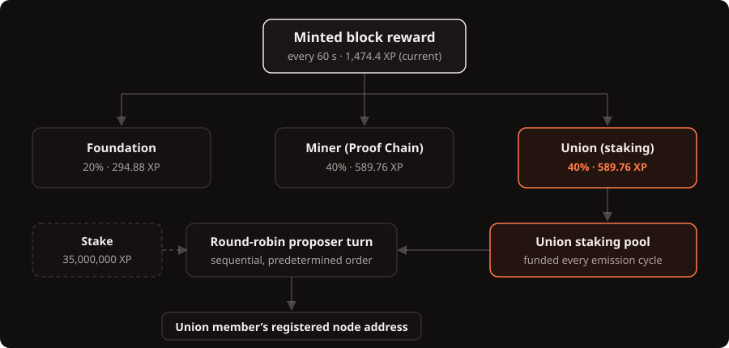
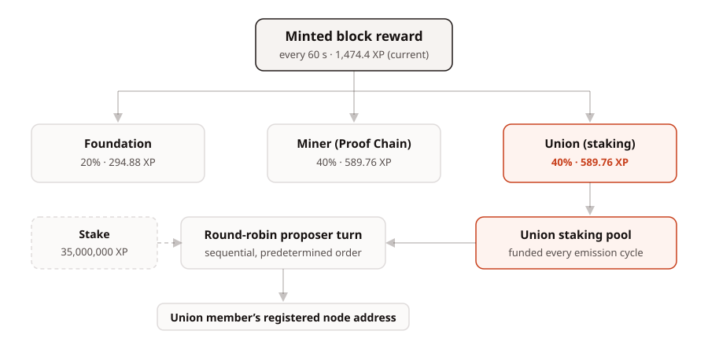

Union Staking
Union Staking is XPHERE's staking mechanism. Union members secure the Main Chain, take part in block validation, and are paid from two distinct protocol income streams:
| Income stream | Union share |
|---|---|
| Minted block rewards | 40% of every minted block reward |
| Transaction fees | 20% of every transaction fee (the fee is also 50% burned, with 20% Miner and 10% Foundation) |
The two are accounted for separately: minted rewards follow the emission schedule, while fee income scales with network usage. See Mining Rewards and Tokenomics.
This page covers the protocol-level economics. For the staking service you can use today, see the XP Staking (Union Vault) section.
Two Ways to Take Part
| XP Union Vault | Union validator membership | |
|---|---|---|
| Who it is for | Any XP holder | Institutions and infrastructure partners |
| What you do | Stake native XP in a non-custodial vault at stake.x-phere.com | Operate a Union validator node admitted by the Foundation |
| Requirement | No node, no membership — see the User Guide | 35,000,000 XP stake and a registered node address |
| Yield source | Validator rewards the Foundation's Union node actually earned | The 40% Union share of blocks your node proposes, plus the Union's 20% share of transaction fees |
| Admission | Open, subject to the vault cap | Permissioned — onboarding runs through the Foundation |
How the Minted Block Reward Share Is Earned


- A reward is minted every 60 seconds. At the current emission that is
1,474.4 XPper cycle (see Mining Rewards). - The reward is split three ways — 20% Foundation, 40% Miner, 40% Union.
- The Union share goes to the block proposer. When a Union member's registered node address serves as the block proposer, that member receives the 40% Union share of that block's reward.
- Proposer turns rotate round-robin. Eligible Union members are cycled in a predetermined, sequential order — this is separate from Proof Chain mining, where miners compete through xpHash Proof-of-Work.
- Rewards are credited automatically to the registered node address. There is no separate claim transaction at the protocol level.
How the Transaction-Fee Share Works
Minted block rewards are not the Union's only income. Transaction fees are not burned in full — every transaction's fee is split four ways, and 20% goes to the Union:
| Destination | Share |
|---|---|
| Burn | 50% |
| Union | 20% |
| Miner | 20% |
| Foundation | 10% |
| Total | 100% |
Fee revenue is distributed separately from minted emission. A Union member therefore earns from network usage as well as from block issuance — see Mining Rewards for the miner side of the same split, and Tokenomics for the full fee and burn accounting.
Union Membership Requirements
| Requirement | Value |
|---|---|
| Stake amount | 35,000,000 XP per Union membership |
| Node address | A valid address, registered with the stake, that receives proposer rewards |
| Node operation | Infrastructure meeting the Validator Node requirements |
| Admission | Union slots are permissioned in the current network phase — onboarding runs through the Foundation |
The substantial stake threshold is deliberate: it prevents Sybil attacks and aligns Union members with the long-term health of the network.
Staking XP Without Running a Node
The XP Union Vault at stake.x-phere.com is the Foundation's non-custodial staking vault. It pays stakers out of the real earnings of the Foundation's Union validator node and permanently burns the remainder — no node, no membership, and no minimum membership stake required.
- Overview — what it is and why it is different
- How It Works — daily settlement, the reserved-seat split, streaming
- User Guide — stake, claim, and unstake
- Fees & Risks — 0% fees, and the risks you accept
The only official staking address is https://stake.x-phere.com. The Foundation will never ask
for your seed phrase or private key. See Fees & Risks.
See Also
- XP Staking (Union Vault)
- Mining Rewards — the 20 / 40 / 40 minted split and the four-way fee split
- Validator Node — infrastructure and operational requirements
- Tokenomics
- Whitepaper — Union Staking and Reward Mechanism